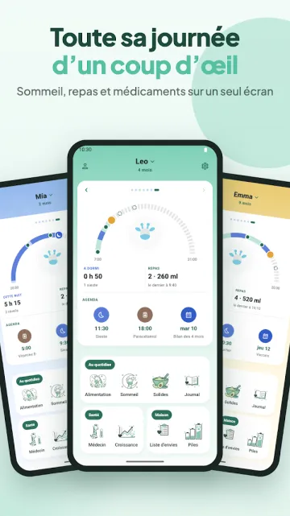

Sur cette page · 10 sections
En bref
Huckleberry est une bonne appli, surtout si vous cherchez de l'aide pour le sommeil : ses formules payantes Plus et Premium ajoutent les prédictions de siestes SweetSpot et des plans de sommeil personnalisés. Si vous voulez surtout noter repas, sommeil et couches sans abonnement, Baby Tracker (Nighp) et Baby Daybook sont les alternatives les plus évaluées sur Google Play, et Raffy, que nous développons, est une option gratuite et sans publicité, uniquement sur Android. Si c'est le coaching sommeil qui vous a fait choisir Huckleberry, les autres applis présentées ici ne mentionnent pas de plans de sommeil conçus par des experts sur leurs pages de boutique.
Transparence : nous développons Raffy, l'une des alternatives ci-dessous. Les alternatives sont classées par nombre d'avis sur Google Play, du plus élevé au plus faible ; Raffy arrive donc en dernier. Chaque information provient de la fiche Google Play de l'appli, de son site officiel ou de sa page App Store, consultée le 3 nov. 2026 (notes et téléchargements Google Play relus le 6 nov. 2026). Quand une page ne dit pas quelque chose, nous écrivons « non indiqué ». Pour une liste plus large qui inclut Huckleberry, consultez notre comparatif des meilleures applis de suivi bébé pour Android.
Huckleberry, décrite honnêtement
Un suivi bébé construit autour du sommeil. Son offre gratuite enregistre le sommeil, les repas, les couches et la croissance ; les formules payantes ajoutent les prédictions de siestes SweetSpot, des programmes et des plans de sommeil personnalisés. Sur Google Play, elle affiche 4,9 étoiles sur 37,3K avis et 1M+ téléchargements (Google Play, consulté le 6 nov. 2026).

- Convient à : Parents qui veulent un accompagnement sommeil, des prédictions de siestes ou un plan de sommeil structuré, et sont prêts à payer. Convient aussi aux foyers sur iPhone.
- Moins adapté si : Personnes qui veulent des prédictions sans abonnement, ou qui ont besoin de l'appli dans une autre langue, car sa fiche App Store indique l'anglais uniquement.
- Prix : Freemium. Sa page de tarifs affiche Free ($0), Plus à $5.74 par mois facturé annuellement et Premium à $9.99 par mois facturé annuellement (la page n'affiche qu'un signe « $ », sans code de devise). Plus ajoute les prédictions SweetSpot, Schedule Creator, Insights, Enhanced Reports et la saisie par IA. Premium ajoute le chat IA Berry et les Custom Sleep Plans. Les prix intégrés à l'appli sur l'App Store américain diffèrent de la page de tarifs ; vérifiez donc le prix affiché dans l'appli avant de vous abonner.
- Plateformes : Android et iOS.
- Fonctionnalités clés : Saisies en un geste pour le sommeil, les repas, les couches et la croissance, minuteur d'allaitement, suivi de la diversification et des allergènes, plusieurs enfants, synchro entre aidants, et prédictions et plans de sommeil payants.
Les raisons d'aller voir ailleurs sont généralement pratiques : le prix des formules payantes, l'envie d'un journal plus simple sans coaching, ou le besoin de l'appli dans une autre langue.
Comparatif rapide
| Appli | Modèle de prix | Plateformes | Langues de l'appli | Points forts |
|---|---|---|---|---|
| Huckleberry | Freemium : offre gratuite ; abonnements Plus et Premium | Android, iOS | App Store : anglais uniquement ; Play : non indiqué | Prédictions de siestes SweetSpot, plans de sommeil personnalisés, chat IA Berry (payant) |
| Baby Tracker (Nighp) | Gratuit avec publicités ; abonnement Plus ou achat unique Remove Ads | Android, iOS | App Store : 14 ; Play : non indiqué | Journaux repas, sommeil, couches et tire-lait, graphiques, synchro entre aidants |
| Baby Daybook | Gratuit avec publicités ; Premium (mensuel, annuel US$59.99, ou à vie sur l'App Store américain) supprime les publicités | Android (dont Wear OS), iOS | App Store : 40 ; Play : non indiqué | Prédictions de sommeil, synchro familiale, journal de santé, rapports imprimables |
| Glow Baby | Gratuit avec publicités ; Premium $59.99 par an après un essai de 7 jours | Android, iOS | App Store : 4 ; Play : non indiqué | Journaux repas, sommeil et couches, étapes de développement, articles et conseils |
| Sprout Baby | Gratuit à installer ; abonnement Premium avec essai gratuit (prix non indiqué) | Android, iOS | Non indiqué | Courbes de croissance avec ajustement prématuré, journal de santé, tendances |
| Raffy | Gratuit : sans offre premium, sans publicité, sans achat intégré | Android uniquement | Anglais, espagnol, français, portugais | Sans publicité, fonctionne hors ligne sans compte, widget repas, banque de lait |
Huckleberry figure en première ligne comme référence ; les cinq alternatives suivent, dans l'ordre des sections ci-dessous.
1. Baby Tracker - Newborn Log (Nighp)
Un journal éprouvé pour les repas, le sommeil, les couches, le tire-lait et la croissance, créé par Nighp Software. C'est l'appli la plus évaluée de cette liste. Si vous voulez un suivi simple et très répandu plutôt qu'un produit de coaching sommeil, c'est le plus proche de l'esprit de la version gratuite de Huckleberry.

- Convient à : Parents qui veulent un journal simple avec graphiques et synchro entre aidants, et que les publicités de la version gratuite ne dérangent pas.
- Moins adapté si : Personnes qui veulent une appli sans publicité sans payer, ou des plans de sommeil conçus par des experts.
- Prix : Gratuit avec publicités. Un abonnement optionnel « Baby Tracker Plus » supprime les publicités et ajoute des repères de timing « What's Next », et il existe un achat unique « Remove Ads ». Google Play indique que le suivi de base reste gratuit. La fiche de l'App Store américain affiche Remove Ads à $4.99, Plus à $5.99 par mois ou $49.99 par an.
- Plateformes : Android et iOS (iPhone, iPad).
- Langues de l'appli : L'App Store indique l'anglais plus 13 autres langues, dont l'espagnol, le français et le portugais. La fiche Google Play n'indique pas les langues.
- Fonctionnalités clés : Minuteur d'allaitement, journaux de biberons et de tire-lait, minuteur de sommeil avec rappels, journal des couches, suivi de croissance avec courbes OMS, notes sur les médicaments et les vaccins, graphiques du quotidien au mensuel, synchronisation entre appareils et aidants.
- Google Play : 4,9 étoiles sur 72,1K avis, 1M+ téléchargements (Google Play, consulté le 6 nov. 2026)
2. Baby Daybook - Newborn Tracker
Une appli complète avec fonction de prédiction du sommeil, widgets et appli Wear OS. La fiche Google Play cite Baltapis comme développeur. C'est l'alternative la plus proche de Huckleberry côté sommeil : sa fiche Play annonce des prédictions de sommeil personnalisées et des rappels de siestes. Elle ne mentionne pas de plans de sommeil conçus par des experts.

- Convient à : Parents qui veulent des prédictions de sommeil, une chronologie visuelle et la synchro familiale dans une seule appli, sur Android ou iPhone.
- Moins adapté si : Personnes qui veulent zéro publicité sans abonnement.
- Prix : Gratuit avec publicités. Un abonnement Premium supprime les publicités, fonctionne sur les appareils Android et iOS et étend Premium aux aidants des profils de bébé partagés. L'App Store américain propose des options Premium Mensuel, Annuel (US$59.99) et À vie, avec plus d'un prix affiché pour certaines. Nous n'avons trouvé aucun prix public unique pour les formules sur une page Google Play ou sur le site officiel.
- Plateformes : Android (y compris Wear OS) et iOS.
- Langues de l'appli : L'App Store indique l'anglais plus 39 autres langues, dont l'espagnol, le français et le portugais. La fiche Google Play n'indique pas les langues.
- Fonctionnalités clés : Prédictions de sommeil avec chronologie visuelle, journaux des repas, du tire-lait et de la diversification, journal des couches et du pot, croissance selon les courbes CDC et OMS, journal de santé (symptômes, médicaments, consultations, vaccins), synchro familiale en temps réel, rapports imprimables, widgets.
- Google Play : 4,7 étoiles sur 69,3K avis, 1M+ téléchargements (Google Play, consulté le 6 nov. 2026)
3. Baby Tracker App | Glow
L'appli de suivi bébé de Glow Inc, qui fait partie d'une famille d'applis de santé Glow. La fiche Play la décrit comme alimentée par l'IA et inclut aussi des articles et des conseils. Choisissez-la si vous voulez un suivi accompagné de contenus à lire ; sa note Google Play est la plus basse des applis comparées ici, lisez donc d'abord les avis récents.

- Convient à : Parents qui aiment avoir des conseils et des articles à côté de leurs journaux, et que les publicités de la version gratuite ne gênent pas.
- Moins adapté si : Personnes qui veulent une appli gratuite sans publicité, ou un suivi simple sans couche de contenu.
- Prix : Gratuit avec publicités. Glow Premium est un abonnement unique pour les quatre applis Glow : un essai gratuit de 7 jours, puis $59.99 par an (la page n'affiche qu'un signe « $ »). Premium inclut une expérience sans publicité.
- Plateformes : Android et iOS.
- Langues de l'appli : L'App Store indique l'anglais, le français et le chinois (simplifié et traditionnel). La fiche Google Play n'indique pas les langues.
- Fonctionnalités clés : Journal des couches, allaitement et tire-lait, journal des repas, suivi du sommeil, étapes de développement, relevés de croissance, articles sur les soins du nouveau-né.
- Google Play : 3,9 étoiles sur 14,7K avis, 1M+ téléchargements (Google Play, consulté le 6 nov. 2026)
4. Baby Tracker by Sprout
Une appli de Sprout Apps avec journaux des repas, du sommeil, des couches, de la croissance et de la santé. C'est une appli bien plus petite que les autres sur Google Play. C'est une alternative plus légère, avec un essai gratuit de ses fonctions premium ; vérifiez le prix dans l'appli avant de vous abonner, car nous n'en avons trouvé aucun sur sa page de boutique.

- Convient à : Parents qui veulent suivre la croissance sur les courbes OMS et CDC, avec ajustement pour les bébés prématurés, et un journal de santé pour les consultations et les vaccins.
- Moins adapté si : Personnes qui veulent une large base d'utilisateurs et un long historique d'avis : elle compte 209 avis sur Google Play.
- Prix : Gratuit à installer avec achats intégrés. Premium propose un essai gratuit et se renouvelle automatiquement ; aucun prix n'est indiqué sur la fiche.
- Plateformes : Android et iOS.
- Langues de l'appli : Non indiqué.
- Fonctionnalités clés : Minuteur d'allaitement, journaux de biberons et de diversification, journal de sommeil avec rappels, couches, croissance sur les courbes OMS et CDC, étapes de développement, journal de santé avec consultations et vaccins, graphiques de tendances, synchro avec les aidants.
- Google Play : 4,1 étoiles sur 209 avis, 10K+ téléchargements (Google Play, consulté le 6 nov. 2026)
5. Raffy: Baby Tracker & Feeding
L'appli que nous développons. Un suivi serein des repas, du sommeil et de la croissance, qui fonctionne hors ligne et ne demande aucun compte. Elle est gratuite sans offre premium, il n'y a donc rien à passer en supérieur ; la contrepartie, c'est qu'elle est uniquement sur Android, plus récente, et sans coaching payant.
- Convient à : Parents Android qui veulent une appli gratuite sans publicité, la croissance sur courbes OMS, un widget de repas sur l'écran d'accueil, et une interface en anglais, espagnol, français ou portugais.
- Moins adapté si : Toute personne sur iPhone, car il n'existe pas d'appli iOS. Aussi ceux qui veulent des prédictions de sommeil ou un coaching sommeil : la fiche décrit des journaux de sommeil et des rappels, pas des prédictions. Elle n'a pas non plus de journal des couches, d'export de données, ni de moyen d'inviter un second aidant. C'est l'appli la plus récente et la plus petite ici.
- Prix : Gratuit : sans offre premium, sans publicité, sans achat intégré.
- Plateformes : Android uniquement (pas d'appli iPhone).
- Langues de l'appli : Anglais, espagnol, français et portugais.
- Fonctionnalités clés : Biberons en ml ou fl oz et minuteur d'allaitement gauche/droite, journal de sommeil avec rappels de sieste et de coucher, poids, taille et périmètre crânien sur courbes OMS avec courbes de percentiles, planificateur de diversification et liste des aliments essayés, rendez-vous, journal de température et de médicaments, journal photo, banque de lait maternel, plusieurs enfants, connexion facultative pour sauvegarder et synchroniser.
- Google Play : pas encore de note affichée, 50+ téléchargements (Google Play, consulté le 6 nov. 2026)
Essayez Raffy, gratuit et sans publicité
Repas, sommeil et croissance sur courbes OMS dans une seule appli Android. Sans offre premium, sans publicité.

Rester ou changer ?
- Restez sur Huckleberry si ses prédictions SweetSpot ou un plan de sommeil fonctionnent pour vous.
- Choisissez plutôt Baby Daybook si vous voulez des prédictions de sommeil et une chronologie, et acceptez les publicités ou un abonnement Premium.
- Choisissez plutôt Baby Tracker (Nighp) si vous voulez un journal simple et très répandu et que la version gratuite vous suffit.
- Choisissez plutôt Raffy si vous êtes sur Android, voulez une appli gratuite sans publicité ni abonnement, et n'avez pas besoin de prédictions ni de coaching. Si quelqu'un dans la famille utilise un iPhone, Raffy n'est pas une option.
Si vous avez seulement besoin d'une réponse rapide sur le rythme des siestes, essayez le planificateur de fenêtres d'éveil gratuit avant de payer une formule. Pour les bases du suivi, consultez notre guide de l'appli Android de suivi bébé et l'estimateur de quantités d'alimentation.
Sécurité pédiatrique
- Une appli enregistre ce que vous lui indiquez. Elle ne peut rien diagnostiquer, et une « prédiction » de sommeil ou de repas est un repère, pas une règle.
- Si votre bébé est difficile à réveiller, refuse les repas, a très peu de couches mouillées ou semble malade, appelez votre pédiatre, quoi que montre l'appli.
Questions fréquentes
Quelle est la meilleure alternative à Huckleberry sur Android ?
Cela dépend de la raison de votre départ. Pour un simple journal, Baby Tracker (Nighp) et Baby Daybook sont les plus évaluées sur Google Play. Pour une appli gratuite sans publicité, Raffy est une option, uniquement sur Android. Aucune des alternatives présentées ici ne mentionne de plans de sommeil conçus par des experts comme Huckleberry Premium.
Huckleberry est-elle gratuite ?
En partie. Huckleberry a une offre gratuite pour suivre le sommeil, les repas, les couches et la croissance. Sa page de tarifs affiche Plus à $5.74 par mois facturé annuellement et Premium à $9.99 par mois facturé annuellement. Les prédictions et les plans de sommeil nécessitent une formule payante.
Existe-t-il une alternative gratuite à Huckleberry sans publicité ?
Raffy est gratuite, sans publicité, sans offre premium et sans achat intégré, mais uniquement sur Android. Baby Tracker (Nighp), Baby Daybook et Glow sont gratuites avec publicités et vendent une version payante.
Une alternative propose-t-elle des prédictions de sommeil comme SweetSpot ?
Baby Daybook annonce des prédictions de sommeil et Baby Tracker (Nighp) propose des repères de timing « What's Next » facultatifs. Raffy enregistre le sommeil et envoie des rappels mais ne mentionne pas de prédictions. Nous n'avons pas comparé la précision de ces fonctions.
Sources
- Google PlayFiche Huckleberry: Baby Tracker (consulté le 6 nov. 2026)
- HuckleberrySite officiel (consulté le 3 nov. 2026)
- HuckleberryPage de tarifs (consulté le 3 nov. 2026)
- Apple App StoreFiche Huckleberry (US) (consulté le 3 nov. 2026)
- Google PlayFiche Baby Tracker - Newborn Log (consulté le 6 nov. 2026)
- Nighp SoftwareSite de Baby Tracker (consulté le 3 nov. 2026)
- Apple App StoreFiche Baby Tracker - Newborn Log (US) (consulté le 3 nov. 2026)
- Google PlayFiche Baby Daybook - Newborn Tracker (consulté le 6 nov. 2026)
- Baby DaybookSite officiel (consulté le 3 nov. 2026)
- Apple App StoreFiche Baby Daybook - Newborn Tracker (US) (consulté le 3 nov. 2026)
- Google PlayFiche Baby Tracker App | Glow (consulté le 6 nov. 2026)
- GlowPage Glow Baby et Glow Premium (consulté le 3 nov. 2026)
- Apple App StoreFiche Glow Baby Tracker (US) (consulté le 3 nov. 2026)
- Google PlayFiche Baby Tracker by Sprout (consulté le 6 nov. 2026)
- Sprout AppsSite officiel (consulté le 3 nov. 2026)
- Google PlayFiche Raffy: Baby Tracker & Feeding (consulté le 6 nov. 2026)
Dernière vérification : 6 nov. 2026 pour les notes, téléchargements et captures d'écran Google Play ; 3 nov. 2026 pour les prix, plateformes, langues et fonctionnalités. Chaque information ci-dessus a été lue sur ces pages à cette date et peut changer. Il s'agit d'un comparatif éducatif, pas d'un avis médical. Politique éditoriale